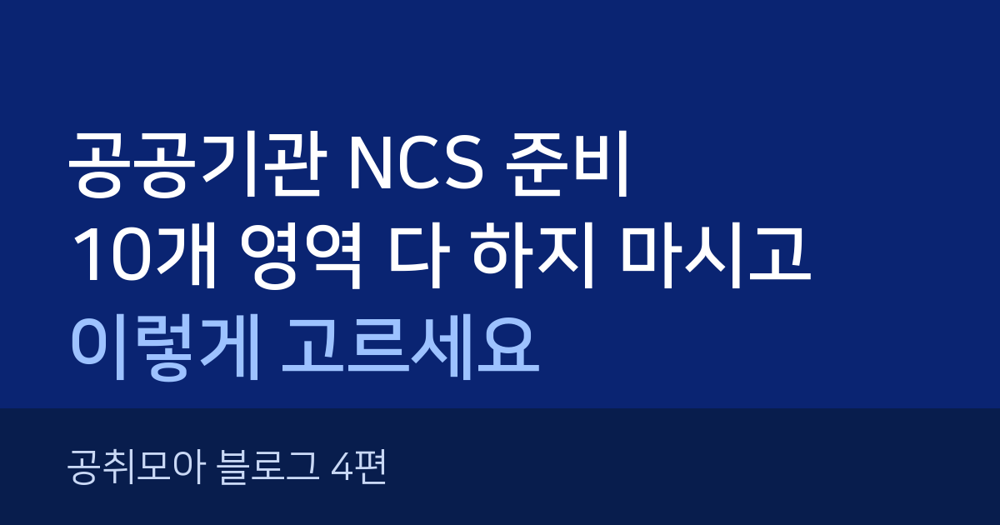
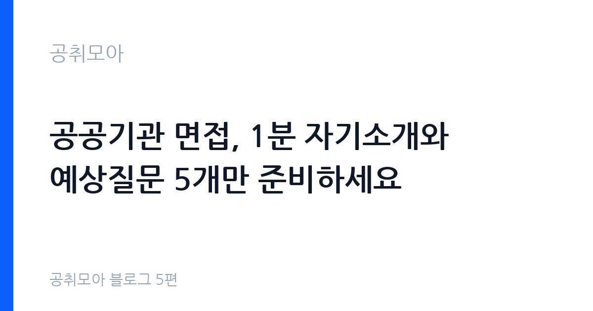
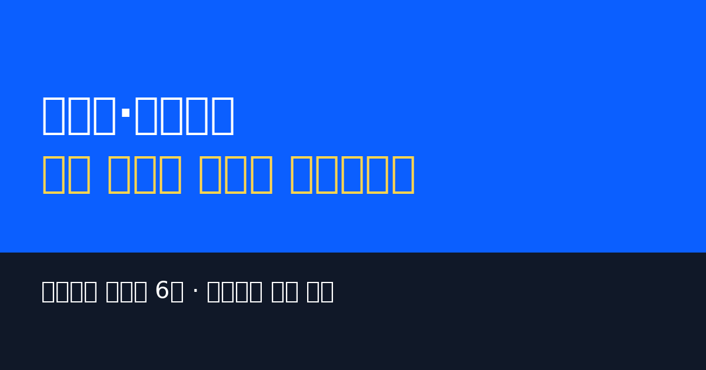
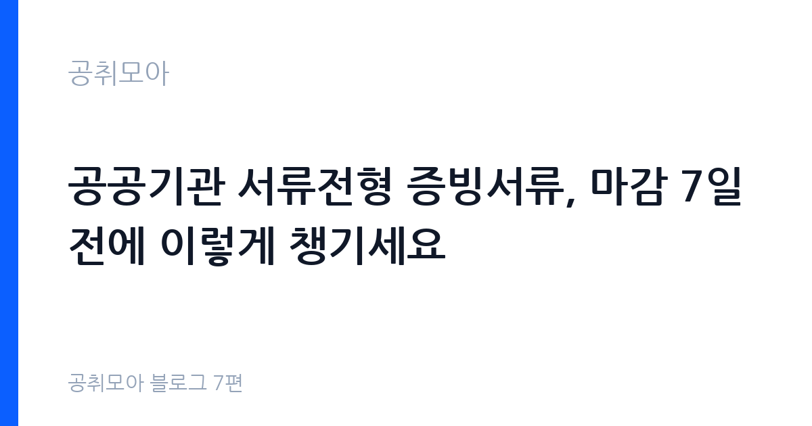
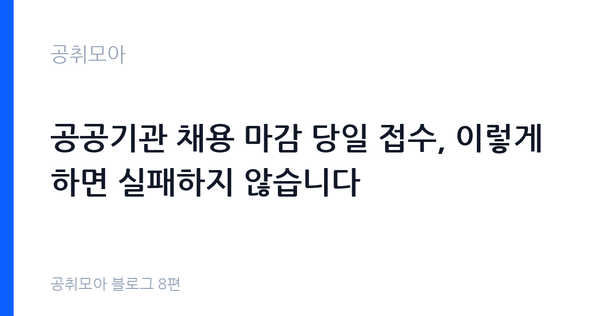
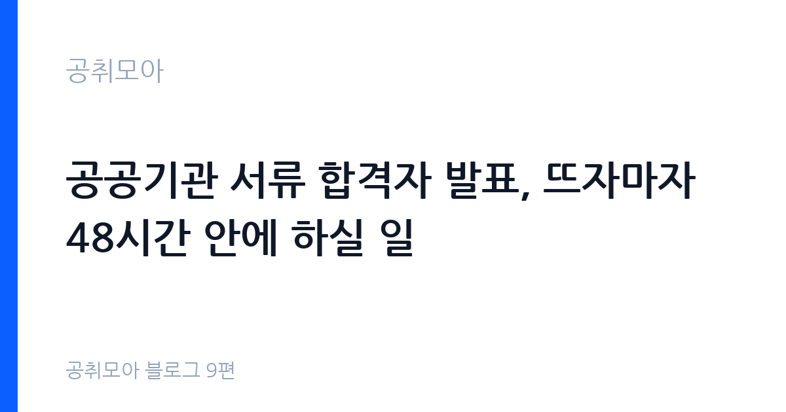
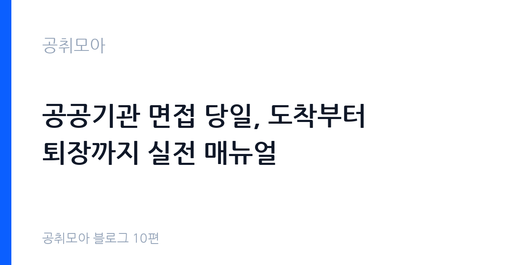
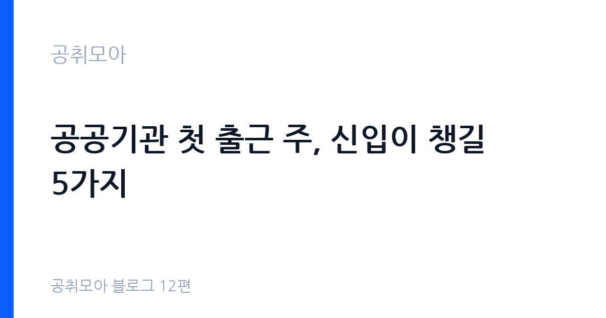
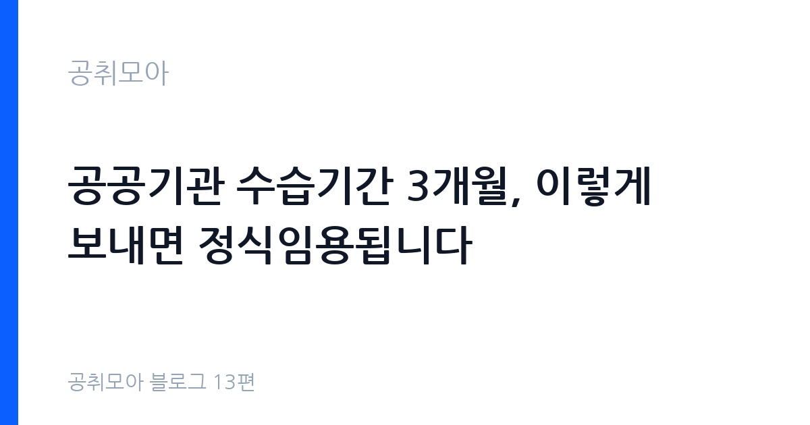

공취모아 블로그
공공기관 취업 전략과 공고 해독 글을 모았습니다.

공공기관 채용 유형 5가지 총정리, 이 글만 보시면 다 해결됩니다2026-10-14 · 공채·경채·공무직·기간제·인턴 비교

공공기관 공고문 읽는 법, 급여표·우대사항·마감 3가지만 보세요2026-10-15 · 급여표·우대사항·마감 독해법

공공기관 자소서 지원동기, 기관 사업 수치 1개가 열정 열 줄을 이깁니다2026-10-16 · 지원동기·경험 수치화·블라인드 유의점

공공기관 NCS 준비, 10개 영역 다 하지 마시고 이렇게 고르세요2026-10-17 · 모듈형·PSAT형 구분과 3개 영역 우선 전략

공공기관 면접, 1분 자기소개와 예상질문 5개만 준비하세요2026-10-18 · 1분 자기소개 공식·예상질문·복장 체크리스트

공공기관 가산점·우대사항, 이것 챙기면 서류가 달라집니다2026-10-19 · 취업지원대상자·장애인·자격증 우대

공공기관 서류전형 증빙서류, 마감 7일 전에 이렇게 챙기세요2026-10-20 · 서류 4종·발급 경로·마감 체크리스트

공공기관 채용 마감 당일 접수, 이렇게 하면 실패하지 않습니다2026-10-21 · 마감 3일 전 접수·수정 규정·오류 대처법

공공기관 서류 합격자 발표, 뜨자마자 48시간 안에 하실 일2026-10-22 · 발표 확인 3곳·면접 일정 확보·추가 서류

공공기관 면접 당일, 도착부터 퇴장까지 실전 매뉴얼2026-10-23 · 30분 전 도착·첫 1분·압박질문 대처

공공기관 최종합격 후, 임용 전까지 2주 안에 하실 일2026-10-24 · 후보 등록·신체검사·호봉 획정

공공기관 첫 출근 주, 신입이 챙길 5가지2026-10-27 · 임용서류·복무교육·급여계좌·수습평가

공공기관 수습기간 3개월, 이렇게 보내면 정식임용됩니다2026-10-28 · 평가 기준표·복무 무사고·급여 90%·중간점검